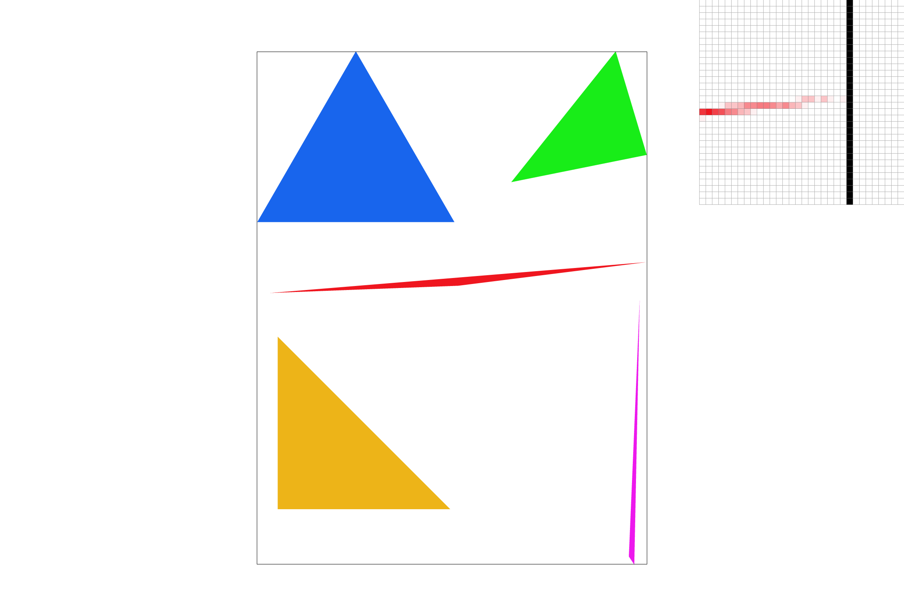
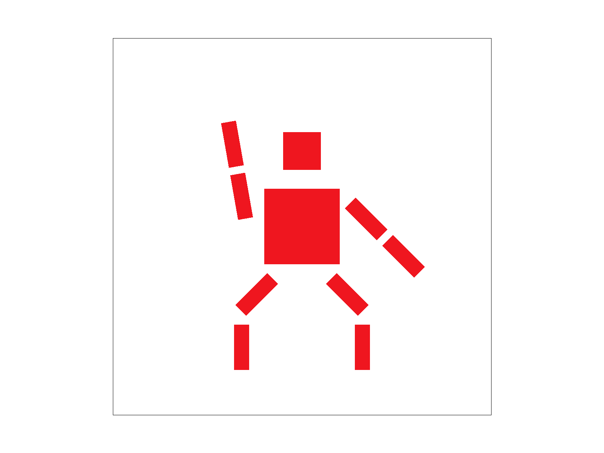
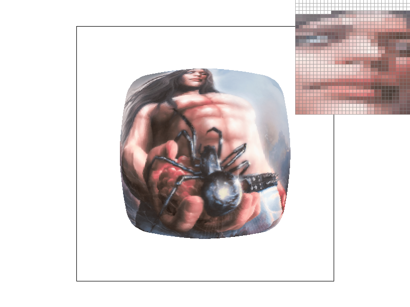
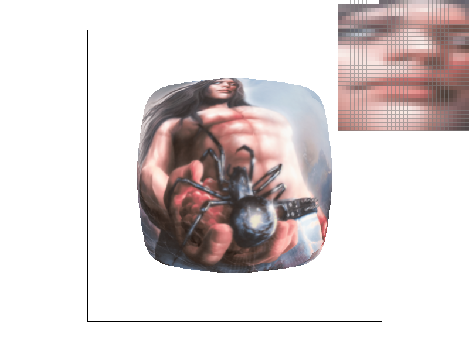

Overview
In this project, we created an image rasterizer! We used multiple sampling methods to draw and color 2d triangles with both raw colors and from textures. We integrated multiple Antialiasing techniques. This project gave us tremendous insite as to what goes into generating a 2d image.
Section I: Rasterization
Part 1: Rasterizing single-color triangles
To rasterize triengles, our code takes in the 3 vertices of the triangles as input. We calculate the integer lower and upper bounds in both the x and y direction to create our bounding box. Then, we iterate through the pixels of the bounding box and use the "inside" function from triangulation.cpp. If the point is inside the triangle, we fill the pixel with the indicated color using fill_pixel. At first, we were doing this calculation ourselves using the 3 line point-in-triangle test formulas documented in class, but after discovering this function we thought the code would be much cleaner this way. In order to ensure we are sweeping triangles in all directions, we have to run the inside function clockwise and counterclockwise. This is achieved by reversing the order of the triangle vertices used as input (i.e. fill the pixel if inside(A, B, C) OR inside(C, B, A). Since our algorithm iterates through every pixel in the bounding box of the triangle and performs two constant time operations (fill_pixel and inside), the runtime is no worse than one that cheks each sample within the bounding box. Additionally, though no major optimizations were made, we did iterate through the pixels using a "#pragma omp for" which spreads the loop across cores and speeds up runtime a little.

Part 2: Antialiasing triangles

|

|

|

|
Our supersampling method builds on the rasterizing method described above, however we additionally search within each pixel with a step size of 1/sampling rate. The sample buffer already was resized to account for the sampling rate so we just changed the indexing of our fill pixel to account for the addition of samples. Then before resolving to the framebuffer, we average all the samples of each pixel.
Supersampling is equivalent to applying a 1-pixel box filter at each pixel therefore filtering out high frequences. Supersampling helps reduce aliasing .
Aside from the additional loops described above, we changed the fill_pixel header to have a step argument that can be defaulted to a particular value to account for rasterizing points and lines. The resolve_to_framebuffer also accounts for averaging the supersamples of each pixel to the corresponding framebuffer pixel .
Part 3: Transforms
Our robot is doing the nae nae. We rotated the robots head, and additionaly rotated + translated the arms and legs
Section II: Sampling
Part 4: Barycentric coordinates

Barycentric coordinates give the relative distance of a point to each vertex of a triangle. Using the distances from each vertex, we calculate "weights" alpha, beta, and gamma that describe the relative distance from each vertex. This can be visualized with the above triangle. If we give each vertex a color of either red, green, or blue, the alpha, beta, and gamma values (i.e. the barycentric coordinates) of a point in the triangle correspond to the rgb values of that point. For example, a point closer to the blue vertex will have a higher weight towards that corner and will have more blue in it's rgb value than other colors.

Part 5: "Pixel sampling" for texture mapping
Pixel sampling aims to solve the problem of mapping screen space pixels to texture space and samples the corresponding color from the texture to screen space. Given triangluar vertices in both screen space and the texture space, we implement pixel sampling by mapping each pixel inside the desired triangle with the barycentric coordiantes of the pixel in the screen space and converting these points into the texture space coordinates UV. For nearest-pixel, we simply return the color of the nearest texel in the texture space after mapping and scaling to UV coordiantes. For bilinear sampling, we interpolate between the four nearest neighrboring texels and return the color of 2 horzontal interpolations and 1 vertical interpolation as discussed in lecture with respect to the mapped UV coordate, which gives more weight to the color of the texel in relation to how close this texel is to the desired texture coordinate.

|

|

|

|
In both sampling rates of 1 and 16, bilinear interpolation clearly produces rounder edges / a smoother transition of colors of the letters of the seal compared to the nearest pixel method. There will be a large difference between the two methods when considering the scale of screen space to texture space. For example, in a magnifying scale where the texture space is bigger than the screen space, bilinear interpolation is desired as multiple pixels of the texture space to the screen space so taking the neighboring texels would better represent the desired color of the screen pixel.
Part 6: "Level sampling" with mipmaps for texture mapping
Level sampling is a technique to help us better identify which texel or texels most corresponds to our pixel footprint. To do this, we recursively downsample our texture file and store multiple lower resolution versions of our texture in our MipMap. Then for each sample, we figure out which downsampled texture's resolution best approximates the screen sampling rate. For level zero sampling, we simply sample from the 0th level of the mipmap (the original resolution). Otherwise, we calculate our mipmap level and store it as L = log2(max(norm(difference in u and v over x), norm(difference in u and v over y)). For nearest level sampling, our mipmap level is simply the closest integer to L. For linear level sampling, we linearly interpolate the results of sampling at the two nearest integers to L, weighing them by their proximity to L.
All three techniques help reduce aliasing, however it depends on the scale of the screen space pixels to texture space to really determine which is the best at Antialiasing. Increasing sample per pixel and using bilinear sampling generally helped reduced aliasing however changing level sampling methods did not always yeild better results. Level sampling has higher memory usage as it discussed in lecture, containing 1/3 more memory of the original texture and level linear can be computationally slow due to the interpolation between multiple levels of the mipmap. Super sampling is also more memory intensive as more values must be stored per pixel, as well as computationally expensive as each pixel must be traversed in itself. Pixel sampling is not as memory intensive however when using bilinear sampling it can be computationally expensive as you must interpolate between multiple texels per pixel.
|

|

|

|

|
website: https://joshaubin.github.io/184-proj-webpage/